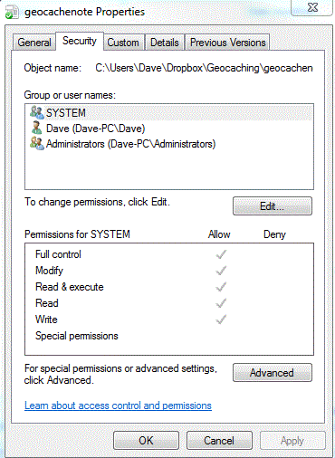

<div id="jsn-maincontent" class="span9 order1  row-fluid">
					<div id="jsn-maincontent_inner">
						<div id="jsn-centercol"><div id="jsn-centercol_inner">
									<div id="jsn-mainbody-content" class=" jsn-hasmainbody">
								<div id="jsn-mainbody-content-inner1"><div id="jsn-mainbody-content-inner2"><div id="jsn-mainbody-content-inner3"><div id="jsn-mainbody-content-inner4" class="row-fluid">
								
										
								
								<div id="jsn-mainbody-content-inner" class="span12 order1 ">
		
										<div id="jsn-mainbody">
										<div id="system-message-container">
	</div>

										<div class="item-page" itemscope itemtype="https://schema.org/Article">
	<meta itemprop="inLanguage" content="en-GB" >
	
		
						
		
	
	
		
								<div itemprop="articleBody">
		<p></p>
<h1 style="text-align: center;">Hierarchical directory and file attributes</h1>
<p><strong>Introduction</strong><br>A directory in computing is a way of organising files and folders. It also refers to a container that holds other directories and files. A directory is also known as a 'folder' and a directory inside another directory is called a 'subdirectory' or a 'subfolder'. A 'hierarchical directory' has folders organised like a tree structure so for example, you might have the hard drive called the C drive, which is called the 'root' because it is a container that doesn't sit inside any other container. Inside that, you may have 10 directories (folders). Each of those 10 folders may have more folders and / or some files, and each of those folders yet more files and folders. The directory structure looks like the roots of a tree fanning out, or a family tree.</p>
 
<p><span style="line-height: 16.3636360168457px;">Directories in a hierarchical structure are logically organised, which makes is easier to find things than if you just had lots of folders on your hard drive. The idea is that you keep creating subdirectories that are ever-more focussed on just one area. Then you store files in that subdirectory.</span></p>
<p><span style="line-height: 1.5;">For example, a student may have an area called 'My documents'. Inside that, they might set up a directory for each subject they take. Then in Computer Science, for example, they may create a subdirectory called A Level. Inside that, they create four subdirectories called Unit 1, Unit 2, Unit 3 and Unit 4. Inside Unit 1, they might have 12 more subdirectories, one for each topic in Unit 1. Then, they would start to store files relevant to each topic in their appropriate subdirectory.</span>&nbsp;A year after they made notes on operating systems, they should still be able to find the files associated with that topic.</p>
<p><strong>File attributes</strong><br>An attribute of a file is a property that that file has. You can set up the attributes of any file or any folder.&nbsp;<span style="line-height: 16.3636360168457px;">In Windows, you right-click on the file and select properties.</span></p>
<p>For example, you can set up a file so that it is hidden. Many important system files are often hidden in this way automatically by the operating system when it was installed, to stop you accidentally deleting them. You can adjust the properties of a file if you want to so that you can view it but not edit or delete it. Sometimes, Network Managers set up general rules that stop certain types of file running. For example, many school Network Managers stop .exe and .bat files from running because they are a common way for networks to be infected with a virus or other malware.</p>
<p></p>	</div>

	
							</div>

									</div>
				
							</div>
							
				        							
							
							</div></div></div></div></div>			
							
							
		        				</div></div> 
				</div></div>